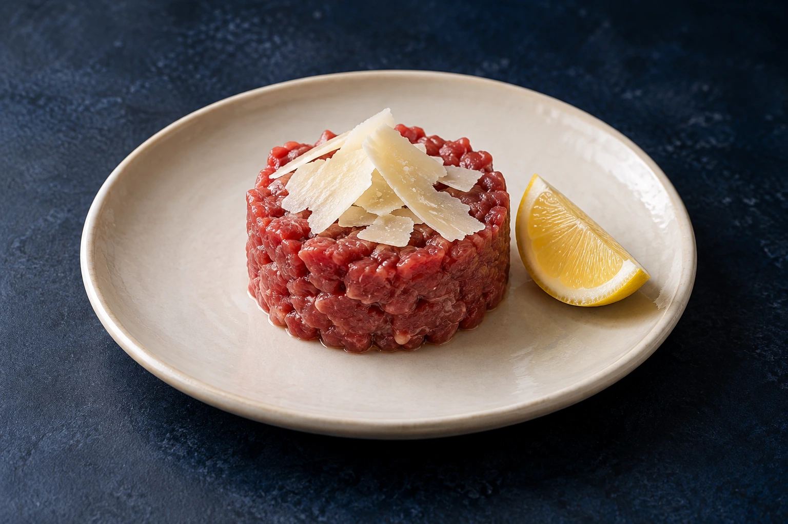
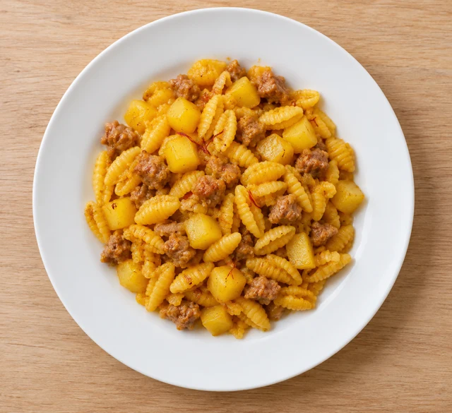
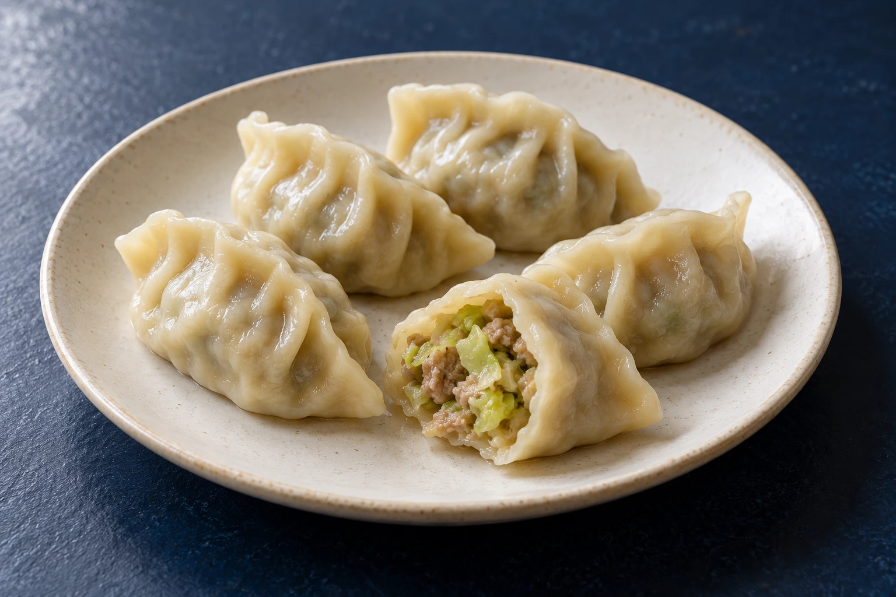
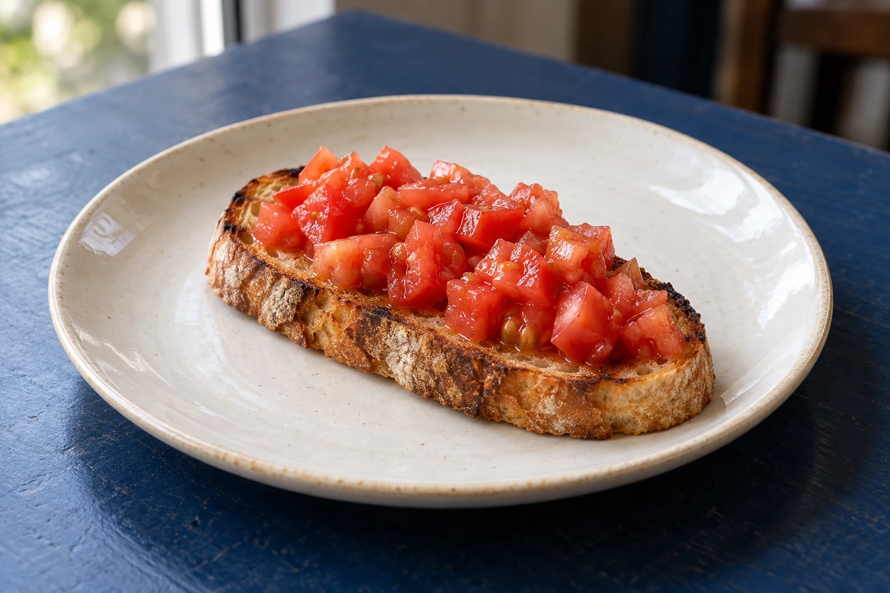
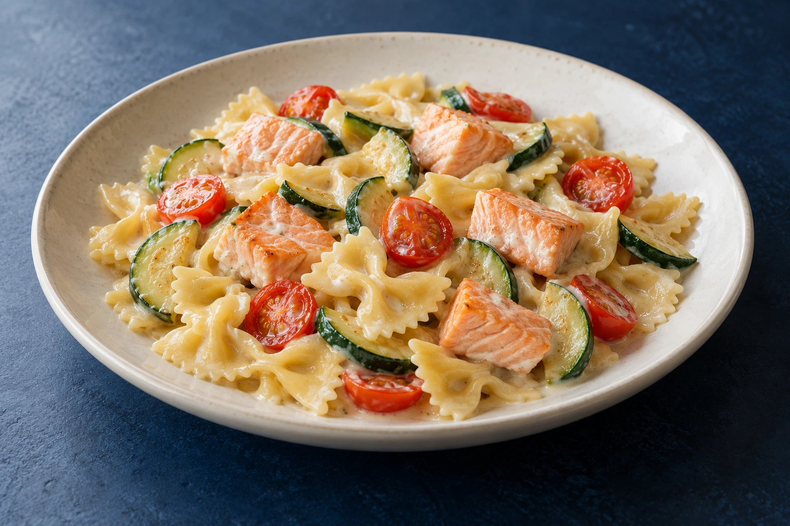
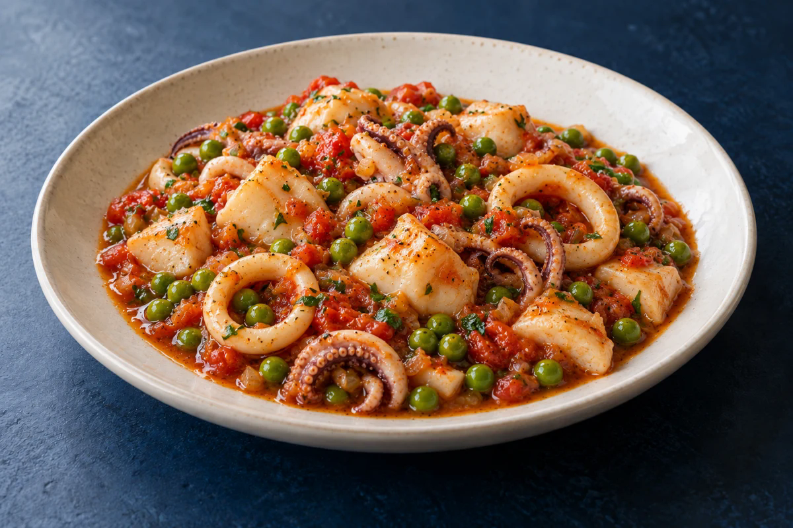

Carne cruda con limone e Grana
Carne cruda, limone e scaglie di Grana.
07
Valido solo a cena,
o a pranzo nei festivi

Carne cruda, limone e scaglie di Grana.
07

Patate e salsiccia avvolte dalle note aromatiche dello zafferano.
01

Cinque ravioli dal delicato ripieno di carne e verza.
01
Fino a esaurimento · Attendere la conferma del Ristorante per considerare valido l’ordine.

Pane tostato e pomodoro fresco: una bruschetta semplice e profumata.
01

Farfalle cremose con zucchine, pomodorini e morbidi bocconcini di salmone fresco.
010407

Seppie e calamari in un delicato umido con piselli.
14
Attendere la conferma del Ristorante per considerare valido l’ordine.
Le immagini dei piatti, pur realistiche, sono generate con intelligenza artificiale e hanno scopo illustrativo.
Prenotando tavolo e menù di cena, entro le 18, il coperto di 1,50 € è omaggio.
Attendere la conferma del Ristorante per considerare valido l’ordine.